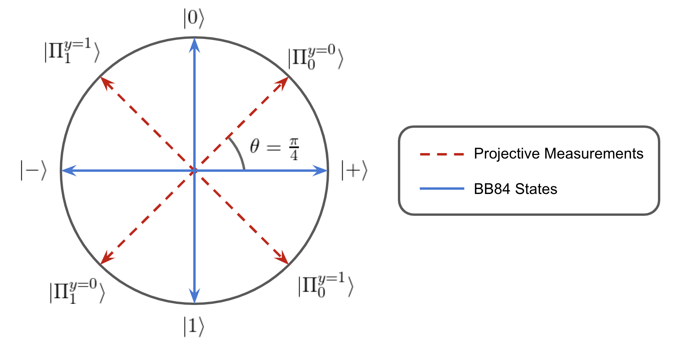

A Single-Qubit Bell Violation as a Device-Independent Test¶
This notebook describe the quantum violation of a novel bell inequality bounding classical communication systems. The Bell violation does not require entanglement and is achieved by incompatible measurements and qubit superposition alone.
Generally, a Bell violation describes non-classical measurement statistics which can only be achieved by a quantum system. That is, Alice and Bob cannot violate a Bell inequality using a classical system and shared randomness. The quantum-classical separation allows for a strong device independent test to be setup provided the following assumptions hold:
Test Assumptions:¶
- Alice and Bob receive independent input drawn from uniform random distributions.
- Alice sends Bob no more than 1-bit or 1-qubit.
If the assumptions are met, a single-qubit bell violation is sufficient to classify the bipartite communication system as a quantum communication system capable of superposition and incompatible measurements.
In an ideal implementation where the communication channel is proven to be limited, Alice and Bob do not need to be trusted. If it is not possible to verify the channel capacity, then Alice or Bob must be trusted for the test to work.
Note: Supporting Software¶
The following Bell inequality and quantum violation were found using the open-source julia package, BellScenario.jl. This package is currently in an alpha version and is unfortunately experiencing a bug which prevents proper execution within a Jupyter notebook. The result is reported in the following cells.
Test Setting¶
We consider a single-qubit scenario where Alice and Bob each have a black-box with classical inputs and outputs. Alice is given an input, x\in\{0,1,2,3\} and encodes the value in a qubit, \rho_x. The qubit is sent to Bob via some communication channel. Bob receives the qubit and performs a projective measurement based on the input y\in\{0,1\}. The outcome of the measurement, b\in\{0,1\} is output by Bob.
This black-box scenario is characterized in a device-independent way by considering its set of conditional probabilities \{p(b|xy)\}. The conditional probability distribution or behavior of a black-box device can be considered as a vector \vec{p} where each element corresponds to a different probability p(b|xy).
The Classical Bound¶
The classical set of probabilities \mathcal{C} is the convex hull of the deterministic black-box behaviors, \mathcal{C} = \text{conv}(\vec{p}_D). A behavior is deterministic if p(b|xy)\in \{0,1\} for all b, x, and y. The deterministic behaviors of a black-box scenario are finite and therefore describe a convex polytope.
A Bell inequality is a linear inequality that bounds the classical polytope for a black-box scenario. Given the inputs, outputs, and communication between Alice and Bob, the bell inequalities can be computed. The procedure is to first enumerate the deterministic behaviors, then use a polytope transformation algorithm to find the bounding inequalities. The vertices and facets used for this result are computed using the BellScenario.jl julia package.
A significant Bell inequality for which there is a quantum violation is expressed,
This inequality may be daunting, but it can be broken down by Bob's input y=0 (left) and y=1 (right). It is important to reiterate that Alice and Bob do not know each other's input. Alice's Best strategy is to use an encoding such as 0,2 \rightarrow |0\rangle and 1,3 \rightarrow |1\rangle, while Bob performs and identity decoding for y=0 and an inverted decoding for y=1. Explicitly, the identity decoder is \{|0\rangle\langle0|,|1\rangle\langle1|\} and the inverting decoder is \{|0\rangle\langle1|,|1\rangle\langle0| \}. However, a closer look at the bell inequality reveals that when y=1, a violation would require Bob to be able to invert only the received but only when Alice has input x\in\{0,1\}. Bob does not know Alice's inputs, so there is no way for Bob to condition a decoding strategy on Alice's input. As a result, classical communication limited systems cannot violate the bell inequality.
In the case where Alice is able to share the input x with Bob, a conditional decoding strategy could be applied and a violation would occur. This edge case is precisely why the communication channel must be limited to a single bit or qubit of information.
Quantum Violation¶
Quantum mechanics can violate the discussed Bell inequality using the following protocol. This protocol was computed using the BellScenario.jl julia package to optimize the quantum violation using semi-definite programming.
Alice encodes the input x into a BB84 qubit state |\psi_x\rangle where |\psi_0\rangle = |0\rangle, |\psi_1\rangle =|1\rangle, |\psi_2\rangle = |+\rangle, |\psi_3\rangle = |-\rangle. Bob measures with a projective measurement onto a basis rotated off the BB84 states by an angle \theta=\pi/4. The measurement bases for each input y are expressed
Since the quantum states consist of |0/1\rangle and |+/-\rangle bases, they require superposition to construct. Likewise, the quantum measurements are incompatible because the two measurement sets align with rotated |0/1\rangle and |+/-\rangle bases and therefore do not commute. On Bloch sphere, the states and measurements lie within the x-z-plane and take the following orientation.

The conditional probabilities of each outcome are computed through the inner product, p(b|xy) = |\langle\Pi_b^y|\psi_x\rangle|^2 = \cos^2(\phi/2), where \phi is the angle of separation between |\psi_x\rangle, and |\Pi_b^y\rangle on Bloch sphere. By the symmetry of the BB84 states \phi can be one of two values \pi/4 or 3\pi/4, therefore, p(b|xy)\in \{\cos^2(\pi/8),\cos^2(3\pi/8)\}. Computing the conditional probabilities for the classical bound, it is found that each of the probabilities in the inequality take on the value p(b|xy) = \cos^2(\pi/8). Summing up all of the conditional probabilities in the inequality, a violation is found,
The protocol violates the classical bound by 13.6\%.
The quantum violation occurs with a single qubit. There is no entanglement, only superposition and measurement incompatibility.
Analyzing the Quantum Violation¶
This analysis shows:
- The quantum protocol violates and is optimal with respect to rotation of measurments.
- Violation does not occur if compatible measurments are used on the BB84 states.
- Violation does not occur if classical states are used with incompatible measurements.
It can be concluded that superposition and measurement incompatibility are both required for a violation to occur in this protocol. The case of classical states and compatible measurements is not considered because such a scenario would be classical and would therefore be bounded by the derived Bell inequality.
Setup¶
# imports
%matplotlib inline
import matplotlib.pyplot as plt
import numpy as np
import context
from device_independent_test import incompatible_measurement
Quantum States¶
We first define Alice's qubits. The BB84 states are are encoded as \{|0\rangle, |1\rangle, |+\rangle, |-\rangle\}, and the classical states are encoded as \{|0\rangle, |1\rangle, |0\rangle, |1\rangle\}. We note that the the classical states will achieve the classical bound if measured in the computational basis.
# qubit states
ψ0 = [1,0]
ψ1 = [0,1]
ψ2 = [1,1]/np.sqrt(2)
ψ3 = [1,-1]/np.sqrt(2)
# quantum state encodings
ψ_bb84 = [ψ0, ψ1, ψ2, ψ3]
ψ_classical = [ψ0, ψ1, ψ0, ψ1]
Quantum Measurements¶
We define Bob's measurements as two pairs of projective measurements. Each measurement has two outputs specified by b and each measurement is used conditionally based on Bob's input y. We wish to see how these quantum stategies perform against misalignment of devices so we will scan the measurements over an angle \theta.
# projective measurements Πby
Π00 = lambda θ: [np.cos(θ),np.sin(θ)]
Π10 = lambda θ: [np.sin(θ),-np.cos(θ)]
Π01 = lambda θ: [np.cos(θ + np.pi/4),np.sin(θ + np.pi/4)]
Π11 = lambda θ: [np.sin(θ + np.pi/4),-np.cos(θ + np.pi/4)]
# incompatible projective measurments
y0_Π = [Π00,Π10]
y1_Π = [Π01,Π11]
# measurement compatible with y0_Π
y1_cl_Π = [Π10,Π00]
Calculating Performance Against the Classical Bound¶
We begin by defining some lists to collect data into:
classical_bound = []
# bb84 states with in/compatible measurements
bb84_incompatible_scores = []
bb84_compatible_scores = []
# classical states with incompatible measurements
cl_incompatible_scores = []
We now compute the score against the Bell inequality for a range of rotation angles, \theta \in [0, \pi/2].
# Measurement angle on a hilbert space
θ_series = np.arange(0, np.pi/2, np.pi/2048)
# computing the bell scores as the measurements are rotated about the y-axis.
for θ in θ_series:
# conditional probability matrices
y0_probs = np.zeros((2,4))
y0_cl_probs = np.zeros((2,4))
y1_probs = np.zeros((2,4))
y1_cl_incomp_probs = np.zeros((2,4))
y1_comp_probs = np.zeros((2,4))
for x in range(0,4):
ψx_bb84 = ψ_bb84[x]
ψx_cl = ψ_classical[x]
for b in range(0,2):
# y=0 measurement
Πb0 = y0_Π[b]
y0_probs[b,x] = np.inner(Πb0(θ),ψx_bb84)**2
y0_cl_probs[b,x] = np.inner(Πb0(θ),ψx_cl)**2
# y=1 incompatible measurement
Πb1 = y1_Π[b]
y1_probs[b,x] = np.inner(Πb1(θ),ψx_bb84)**2
y1_cl_incomp_probs[b,x] = np.inner(Πb1(θ),ψx_cl)**2
# y=1 compatible measurement
Πb1_comp = y1_cl_Π[b]
y1_comp_probs[b,x] = np.inner(Πb1_comp(θ),ψx_bb84)**2
# aggregating scores into arrays of data
bb84_incompatible_scores.append(incompatible_measurement.bell_score(y0_probs, y1_probs))
bb84_compatible_scores.append(incompatible_measurement.bell_score(y0_probs, y0_probs))
cl_incompatible_scores.append(incompatible_measurement.bell_score(y0_cl_probs, y1_cl_incomp_probs))
classical_bound.append(6)
Plot of Violating and Nonviolating Quantum Scenarios¶
- The discussed quantum protocol violates with the
Max Quantum Violationof 6.818. - The
Incompatible Measurementsplot shows that if measurments are rotated in either direction, the violation decreases. This implies that the discussed protocol has been aligned in the optimal fashion. - The
Compatible Measurmentsplot shows that there is no rotation angle for which compatible measurements can violate the quantum bound.
The conclusion is that superposition is necessary for this violation, but is not sufficient on its own. Measurment incompatiblity must also be applied.
cl_bound_plt, = plt.plot(θ_series, classical_bound, label='Classical Bound')
# bb84 states incompatible measurments
bb84_incomp_plt, = plt.plot(θ_series, bb84_incompatible_scores, label='Incomp Measurment', linestyle='-.')
# bb84 states compatible measurments
bb84_comp_plt, = plt.plot(θ_series, bb84_compatible_scores, label="Comp Measurement", linestyle='--')
# classical states incompatible measurements
cl_incomp_plt, = plt.plot(θ_series, cl_incompatible_scores, label="cl incomp", linestyle=":" )
max_violation, = plt.plot(np.pi/8,6.828,'ro', label="Max Quantum Violation")
plt.legend(
[max_violation, bb84_incomp_plt, cl_bound_plt, bb84_comp_plt, cl_incomp_plt],
['Max Quantum Violation','BB84 & Incompatible Measurements', 'Classical Bound', 'BB84 & Compatible Measurements', 'Classical & Incompatible Measurements'])
plt.xlabel("Measurement Rotation Angle (radians)")
plt.ylabel("Bell Score")
plt.title("Quantum State Measurements vs. Angle");